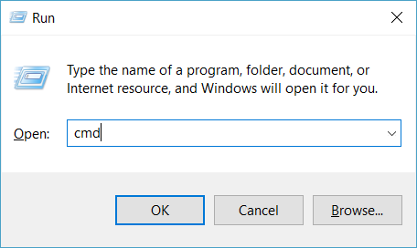
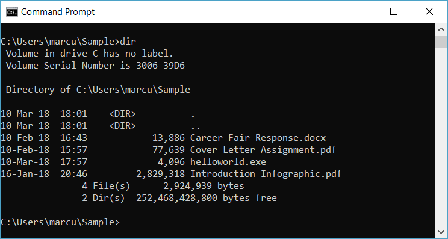
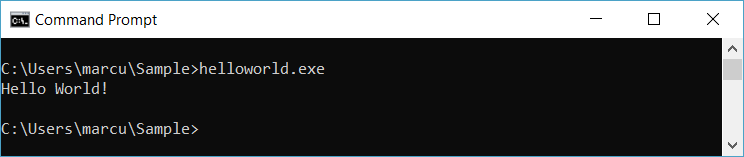

How to Use the Command Prompt in Windows
The Command Prompt, or Windows Command Processor, is a command-line interpreter (CLI) available in most editions of the Microsoft Windows operating system. It is used to execute commands issued by a user. It can be used to automate tasks by means of scripts and batch files and perform some advanced administrative functions.
This article will guide you through six common tasks using the Command Prompt.
Requirements:
- Computer with Microsoft Windows 95 or later operating system
Open the Command Prompt
Press to open the Run dialog. Enter "cmd" in the Run dialog. Press "OK". The command prompt will now appear on your screen.

List Contents of a Directory
Use the dir command to list the contents (such as files and subdirectories) of the current working directory. A listing of all files and subdirectories within the current working directory will be written to the Command Prompt.

Note
Type the command and press to execute a command.
Change Working Directory
Use the cd command to change the working directory.
The cd command takes the following form: cd <target directory>
The working directory will then change to the target directory.
For example, enter cd files to enter a subdirectory called "files".
Use the cd .. command to go up one directory.
Tip
You should surround the directory name with quotation marks if the name includes spaces.
Create a Directory
Use the md command to make a new directory.
The md command takes the following form: md <directory name>
For example, enter md recipes to create a directory called "recipes".
Remove a Directory
Use the rd command to remove a directory.
The rd command takes the following form: rd <directory name
Warning
A directory must be empty to be removed.
Delete a File
Use the rem command to delete a file.
The rem command takes the following form: rem <target file>
Run an Application or Execute Command
Enter the name of the desired application or command to execute the program or command.
For example, enter "helloworld.exe" or "helloworld" to execute program called "helloworld.exe". To execute the version command (to display the operating system version) enter ver.
